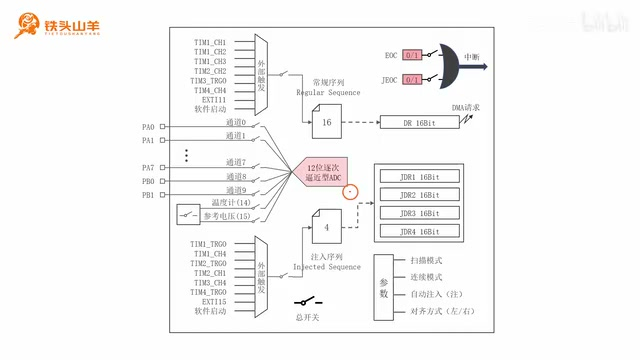
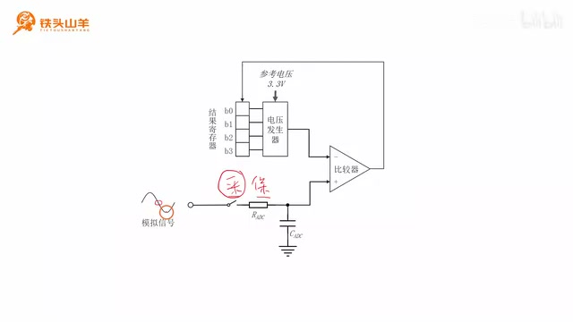
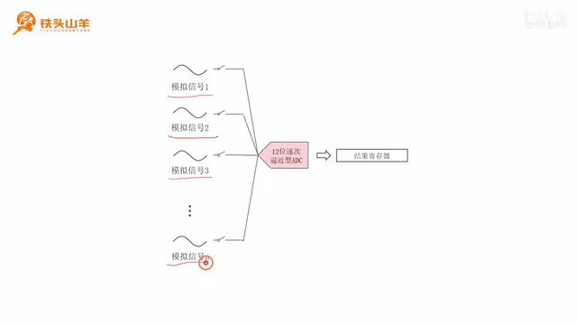
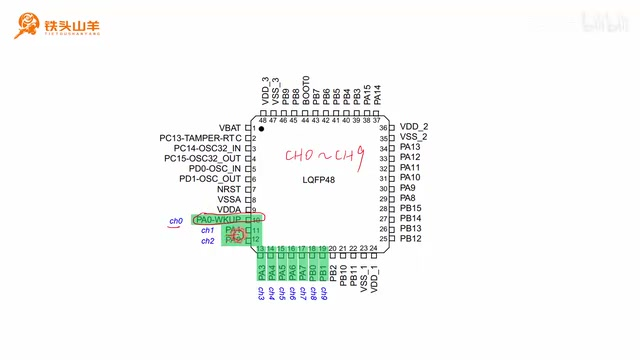
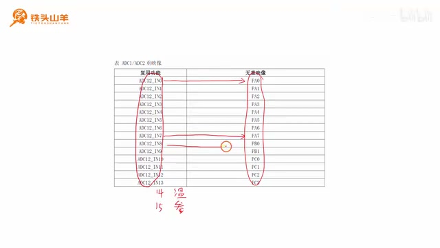
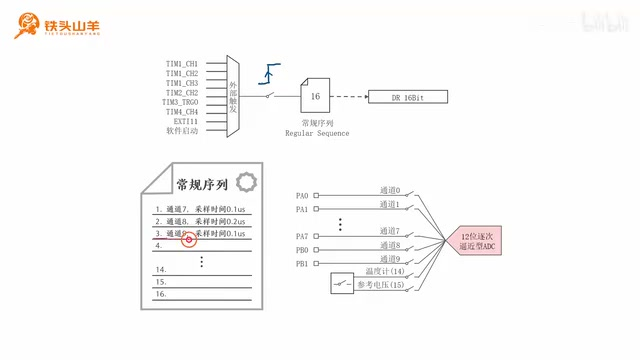
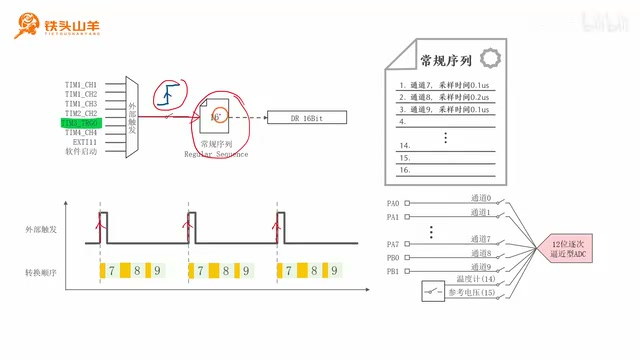
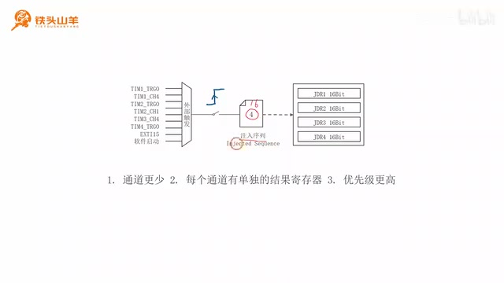
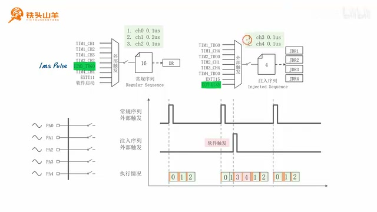
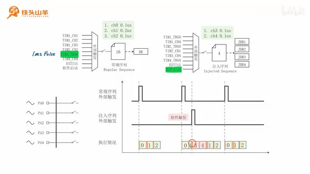

P050 · 10.2 （ADC） ADC模块的结构框图¶
各位同学好，我是铁头山羊。今天学习第十章第二节。先回顾上一期：我们讲了逐次逼近型 ADC 的基本工作原理；本期就在这个逐次逼近型 ADC 的基础上，来学习单片机 ADC 模块的基本结构。课程需要的材料都包含在开发套件包里，画面上有二维码，可以扫码进入淘宝店铺购买。购买套件后可以获得课程的课件和源码，也能加入答疑群，直接和 UP 主交流。
之前介绍过，我们使用的这颗单片机有两个 ADC 模块。看右侧的图，可以找到 ADC1 和 ADC2，它们的工作原理相同。以其中一个 ADC 为例，把模块展开，就得到今天要学习的 ADC 内部结构框图。只有先弄懂这张框图，后续才能在它的基础上给 ADC 编程，所以本节会一步一步解释图中各部分的含义。
课程安排分四部分：ADC 的多路复用、常规序列、注入序列，以及用一个例子说明常规序列和注入序列在实际中如何使用。现在从第一部分开始。所谓 ADC 多路复用，就是只使用一个 ADC，但让它转换多路模拟信号。框图中的多路复用对应图里标出的这一块；下面先从上一节的逐次逼近型 ADC 说起，弄清这部分框图是怎么来的。

ADC 模块结构框图将多路输入、常规序列、注入序列和结果寄存器放在同一张图中。 · 原片 01:15
逐次逼近型 ADC 的结构图里，先看到一个比较器，用来比较两端电压。比较器的一端接模拟信号；模拟信号从这个位置进入 ADC，可以比作天平上要称的重物。信号再经过采样保持电路，可以把它想成天平上放重物的托盘。比较器另一端接结果寄存器，寄存器由许多比特位组成，这些比特位就像砝码；结果寄存器右边还有一个电压发生器，可以想成盛放砝码的托盘。现在把注意力放到采样保持电路。下面先具体看采样功能，再看保持功能。
顾名思义，它有两个功能：采样和保持。先说采样：就是在输入的模拟信号上取一个点。怎么取？把后面的开关闭合，信号上这一时刻的电压就通过电阻给后面的电容充电。电容充满电后，它两端的电压就和刚才取的那个点的电压相等，这样就完成了采样。
再说保持。保持就是让这里的电压在整个转换过程中不发生变化，也就是让电容两端的电压保持不变。

采样保持电路通过开关、电阻和电容取得并保持输入信号的一个电压点。 · 原片 03:35
要保持电压不变，只需把前面的开关断开。通过操作这个开关，便能实现采样和保持。可以看出，这个开关在逐次逼近型 ADC 中非常重要，所以把开关往前提，单独画在图里的这个位置。后面的电路比较复杂，就用五边形代替，只留下前面的采样开关。这样得到一个简化的电路符号：开关表示逐次逼近型 ADC 的采样开关，后面的五边形代表 ADC 剩余电路。后续框图都用它来表示逐次逼近型 ADC。
这个符号的使用方法是：先从左边输入模拟信号，闭合开关，对模拟信号当前时刻的点采样；采样结束后断开开关，让采到的电压保持不变；然后利用后面剩余电路，把这个电压转换为数字信号，也就是 12 位二进制数。这个 12 位数就是转换结果，存储在后面的结果寄存器里。编程人员只需要从结果寄存器把结果读出来即可。这就是用一个 ADC 转换一路模拟信号的过程。
但有时需要同时处理多路模拟信号，该怎么办？解决办法很简单，只要对后面的电路稍作变换就可以了。
可以把这里的采样开关复制很多份，每一路模拟信号都装一个采样开关；再把这些开关连接到后面 12 位逐次逼近型 ADC 的其余电路。这样就得到多路输入共用后级转换电路的结构。

多路模拟输入各有采样开关，开关轮流接到同一个逐次逼近型 ADC。 · 原片 06:40
来分析它怎样处理多路模拟信号。假设有 N 路输入，分别是模拟信号 1、信号 2、信号 3，一直到信号 N，总共 N 路。我们依次转换它们。先闭合第一路开关，从模拟信号 1 当前时刻取一个点；取到后断开开关，用后面的电路转换这个点，并把结果保存到结果寄存器。编程人员再从寄存器读出第一个模拟信号的这个点。接着转换第二路：闭合对应开关，对信号 2 当前时刻取样，采样结束就断开开关，用后面的电路转换，结果仍然放在同一个结果寄存器里，然后把第二个结果读出来。我们重复同样步骤，继续处理信号 3、信号 4，一直到信号 N。这样就能使用一个 ADC 对 N 路模拟信号进行转换。
刚才的电路对应 ADC 框图中的多路复用部分：图中间是 12 位逐次逼近型 ADC，左边有很多开关；每个开关就是 ADC 的一个通道。
例如图中有通道 0、通道 1，下面还有通道 2、3、4，一直到通道 7，接着是通道 8、通道 9，底下还有通道 14 和通道 15。前十个通道，也就是通道 0 到通道 9，分别对应单片机上的十个 IO 引脚。PA0 到 PA7 是八个引脚，再加上 PB0 和 PB1 两个，一共十个。模拟信号可以通过这十个引脚输入 ADC，再由后面的 ADC 电路转换。

芯片封装图中标出 ADC 的模拟输入引脚，并用手写标记圈出通道 0 到通道 9 的引脚区域。 · 原片 08:58
从单片机引脚分配图里找对应关系：PA0 是通道 0；PA1、PA2、PA3、PA4、PA5、PA6、PA7 依次是通道 1 到通道 7；另外两个引脚是 PB0 和 PB1，PB0 对应通道 8，PB1 对应通道 9。这十个通道分别对应单片机上的十个 IO，模拟信号经这些 IO 输入 ADC 转换。
除了十个外部 IO 通道，图上还列出通道 14 和通道 15：通道 14 对应芯片内部温度计，通道 15 对应内部参考电压。讲者说，这两个内部通道的使用方法以后有机会再介绍。注意通道编号并不连续：通道 0 到 9 之后，本来还有通道 10、11、12、13，然后才是 14 和 15；这四个通道暂时还没在引脚图里找到。
要回答通道 10 到 13 在哪里，需要找到之前总结的这颗 C8T6 单片机的引脚分布表。讲者在屏幕上双击打开 Excel 表格，切换到下面的 ADC 工作表，指出左侧这张表描述 ADC 模块的引脚分布，然后把表拿出来仔细看。

引脚表列出 ADC 通道编号及其对应的 MCU 引脚，包含 PC0–PC3 的通道映射。 · 原片 11:10
表格第一列是 ADC 通道编号，从通道 0、1、2、3，一直到通道 10、11、12、13，共 14 个外部通道；通道 14 是前面说的内部温度计，通道 15 是参考电压。前十四个通道各对应一个 IO：通道 0 对 PA0，通道 7 对 PA7，通道 8 对 PB0，通道 9 对 PB1。剩下的通道 10、11、12、13 分别对应 PC0、PC1、PC2、PC3。
讲者接着解释为什么这颗单片机没有这四个通道：按他展示的器件引脚范围，单片机有 PA0 到 PA15、PB0 到 PB15、PC13 到 PC15，以及 PD0 和 PD1，刚好没有 PC0 到 PC3，因此这颗器件没有通道 10 到 13。通过这部分，大家就了解了多路复用电路和它的通道分布。
ADC 的常规序列¶
学完多路复用，进入本节第二部分：ADC 的常规序列。回到 ADC 内部结构框图，刚才讲的是多路复用部分。在它的上方和下方各有一个像文件夹的图标：上面的标注是 Regular Sequence，Regular 是“常规”，Sequence 是“序列”，所以它是 ADC 的常规序列；下面标注 Injected Sequence，Injected 是“注入”，所以它是 ADC 的注入序列。两种序列的工作原理基本一样，下面以常规序列为例解释。

常规序列示例表列出通道 7、8、9；图示采样时间依次为 0.1、0.2、0.1 微秒（示意值）。 · 原片 15:00
常规序列相关的部分用蓝框框出并摘出来看，可以拆成三个部分：中间是常规序列本身，左边是常规序列的外部触发信号，右边是 DR 寄存器，用来保存常规序列转换的结果。先解释什么是常规序列：它就是 ADC 模块里的一份计划。对常规序列来说，左侧触发信号发来之后，计划表会按行规定转换顺序；完成的转换结果从右侧写进 DR。
图中有很多采样开关，每个开关对应一路模拟输入。输入信号从左侧进入，先闭合相应开关，对信号当前时刻的点采样，再断开开关，由后面的逐次逼近型 ADC 转换这个点。先闭合哪个开关、后闭合哪个、每个开关闭合多久，都由这份计划指定。
看左下角的常规序列表例子。表上写着数字 16，表示这张计划表一共有 16 行，每行可以填一项计划，所以最多可以填 16 项。例子只使用前三行：第一行是通道 7，采样时间 0.1 微秒；这个采样时间指后面的开关闭合时长。第二行是通道 8，采样时间 0.2 微秒；第三行是通道 9，采样时间 0.1 微秒。这里的 0.1、0.2 微秒是示意图中的举例值；STM32F1 实际采样时间通过 ADC 时钟周期档位选择。
现在按计划执行。先闭合通道 7 的开关，持续 0.1 微秒，然后断开开关，用后面的 12 位逐次逼近型 ADC 转换取到的点，把结果存到 DR 寄存器。接着执行第二行，闭合通道 8 的开关 0.2 微秒，断开后由 ADC 转换，结果同样放在 DR。再执行第三行，对通道 9 采样 0.1 微秒，断开开关并转换，结果也保存到 DR。到这里，这一份计划就执行完了。看完常规序列，还要注意它左侧有一个外部触发信号。
外部触发信号是做什么的？它是常规序列的启动信号。只要从这个入口输入一个上升沿，常规序列就会执行一遍。比如图中每当出现一个上升沿，通道 7、通道 8、通道 9 就依次转换一遍，这就是外部触发信号的作用。
外部触发入口的梯形结构是一个复用器，左侧有多种触发来源，一共八种。前六种与定时器有关，第七种来自 EXTI11；如果忘了 EXTI 的概念，可以复习前面的视频；第八种来源是软件启动。下面用例子看它怎么工作：按图示例把前面计划的三行填入常规序列，分别为通道 7（图示采样时间 0.1 微秒）、通道 8（0.2 微秒）、通道 9（0.1 微秒），再在左侧复用器选择定时器 3 的 TRGO。
要看这个设置怎样运行，讲者打开定时器 3 的结构框图，对它的实际单元和从模式控制器做简单设置。先看下面的计数单元，假设输入时钟是 72 MHz，并把预分频器 PSC 设为 71。
72 MHz 经 72 分频后就是 1 MHz，计时分辨率为 1 微秒。再把自动重装寄存器 ARR 设为 999。定时周期是 999 加 1，等于 1000；1000 个 1 微秒就是 1 毫秒，所以 update 事件每毫秒发生一次。

定时器 TRGO 的周期脉冲触发常规序列，波形下方标出通道 7、8、9 的依次转换和采样时间。 · 原片 19:20
然后设置上面的从模式控制器，把 TRGO 信号设成 update 模式。每发生一次 update 事件，TRGO 就向外输出一个脉冲。由于 update 每毫秒发生一次，TRGO 输出的是一串间隔 1 毫秒的脉冲。把这些脉冲输入 ADC，并且在 ADC 里选择定时器 3 的 TRGO 作为外部触发源，就能在图中看到一串相隔 1 毫秒的外部触发脉冲。
每个脉冲都有上升沿；当上升沿到达时，右边的常规序列执行一遍：先转通道 7，图示采样时间为 0.1 微秒；再转通道 8，图示采样时间为 0.2 微秒；最后转通道 9，图示采样时间为 0.1 微秒。下方黄色段代表图示的开关闭合时间，依次是 0.1、0.2、0.1 微秒。每出现一个脉冲，通道 7、8、9 就依次转换一次，这份计划也就执行一遍。刚才讲的是 ADC 结构框图中蓝框圈出的常规序列部分。
ADC 的注入序列¶
讲完常规序列，再看本节第三部分：注入序列。它的结构框图与常规序列比较像，也由三部分组成：注入序列、外部触发信号和结果寄存器。不过与常规序列相比，注入序列有三点区别。
第一，注入序列里的通道更少。图中写着数字 4，表示计划表总共四行，每行可以填一个通道，所以最多填四个通道。回忆常规序列，那里写着 16，最多可填 16 项，因此注入序列能安排的通道确实更少。
第二，注入序列每个通道都有单独的结果寄存器。常规序列虽然可以填 16 项，也就是 16 个通道，却只有一个 DR 寄存器。注入序列最多填四个通道，例如 CH0、CH1、CH2、CH3；每个通道的结果分别保存到 JDR1、JDR2、JDR3、JDR4。因为每个通道各有结果寄存器，读取结果会更方便。
第三，注入序列的优先级比常规序列高，接下来用一个例子说明这个优先级。到这里，多路复用、常规序列和注入序列都已经讲过，下面进入第四部分，看看实际例子。

注入序列表有 4 个计划位置，区别于常规序列的 16 个位置。 · 原片 21:00
用一个例子看两类序列怎样运行¶
现在看一个例子。左下角图中，单片机通过 PA0 到 PA4 五个引脚输入五路模拟信号到 ADC。先配置常规序列，填三步计划：第一行通道 0，图示采样时间 0.1 微秒，对应 PA0；第二行通道 1，图示采样时间 0.2 微秒，对应 PA1；第三行通道 2，图示采样时间 0.1 微秒，对应 PA2。常规序列的外部触发选择定时器 3 的 TRGO，假设定时器 3 输入一个间隔为 1 毫秒的脉冲信号。
设置好常规序列后，再设置右边的注入序列，填两步：第一行通道 3，图示采样时间 0.1 微秒，对应 PA3；第二行通道 4，图示采样时间 0.1 微秒，对应 PA4。注入序列的外部触发选软件启动，也就是说，可以通过软件编程，从图中的入口向注入序列发送一个脉冲来启动它。图下方画出了这样的触发脉冲和执行情况。

示例配置 PA0–PA4 两类序列及其触发信号与转换时间线；图中采样时间数值为示意值。 · 原片 23:10
分析实际执行过程。先看常规序列，它收到一个脉冲，脉冲里有一个上升沿；外部触发出现上升沿时，常规序列启动，通道 0、通道 1、通道 2 依次转换。图中对应位置分别是通道 0、1、2；黄色部分表示采样时间，通道 0 是 0.1 微秒，通道 1 是 0.2 微秒，通道 2 是 0.1 微秒。
再往后，常规序列又收到一个脉冲，又出现上升沿，于是常规序列再次执行。就在这轮常规序列执行过程中，注入序列被触发了：程序通过软件直接发送一个脉冲，脉冲的上升沿启动注入序列，需要转换通道 3 和通道 4。

图示注入触发打断通道 1 的转换后，先处理注入通道 3、4，再从头重新转换常规通道 1，随后转换通道 2。图示采样时间仅为示意值。 · 原片 24:50
此时常规序列还在执行，怎么办？讲者指出，直接把常规序列停掉。图中通道 1 正在转换，而且只转换了一半，就先中断；转而转换通道 3 和通道 4。注入转换完成后，通道 1 会从头重新开始转换，随后再转换通道 2；被打断的那一半不会保留。这就是注入序列把常规序列打断的情形，也说明前面所说的注入序列优先级高于常规序列。
最后，常规序列又收到一个脉冲，于是再次执行通道 0、通道 1、通道 2。这样就是整个例子的运行过程。讲者说，如果把这个过程搞明白，就说明本节 ADC 算学会了。视频内容到此讲完；知识点很重要，请大家牢固掌握。感谢收看，我是铁头山羊，我们下期视频再见。